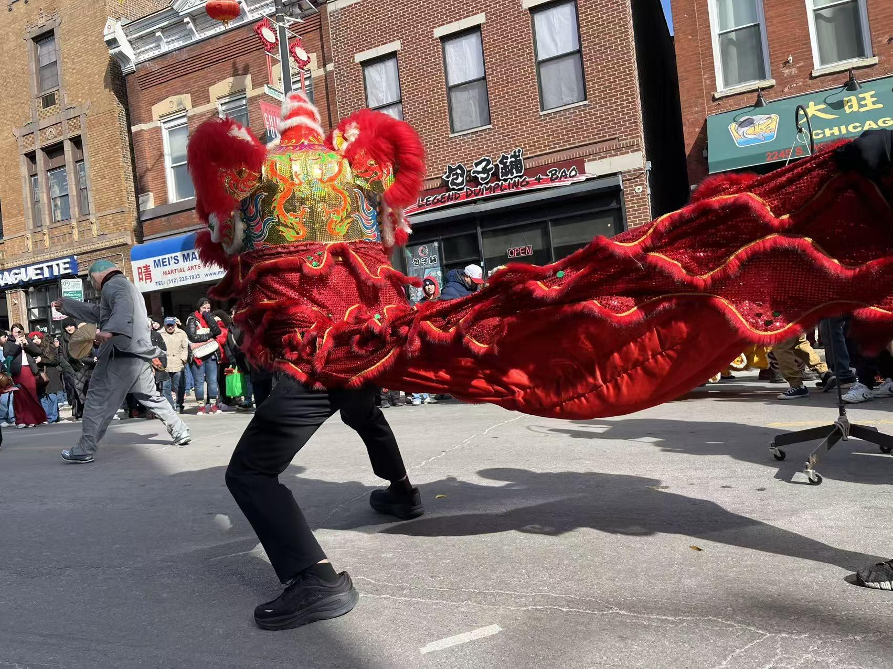

Lunar New Year is recognized and celebrated by most Chinese communities and, in areas with high Chinese populations such as Vietnam and Korea, this fifteen-day celebration is a way to welcome in spring and the new year. It commemorates spring, honors ancestors, and brings forth a lively communal mood.
This year is the Year of the Horse, prominently featured through the parade’s imagery, resulting in horse motifs appearing in advertisements, decorations, and merchandise throughout Chinatown. In Chicago, where Lunar New Year does not come with any official holidays, people still celebrate in their own way—as families and as a community.
This year, the parade was scheduled for 1 p.m. to 3 p.m., with road closures along Chinatown’s main street and surrounding areas. The parade itself is not hosted on the exact day of Lunar New Year, which gives families a chance to celebrate at home first.
Lion Dancers and Dragon Dancers
Lunar New Year celebrations commonly feature lion dancers and dragon dancers, accompanied by music appropriate to the festival—drumbeats and other instruments that move the dancers and the crowd. Multiple lion dancers took part in this parade, featuring people from all sorts of backgrounds.
Several smaller “lions” could be seen running alongside the larger dancers. Typically, a regular lion dancer has a head and a tail, each requiring a separate person to manipulate. For the smaller lions, a single child could carry the costume, giggling as they ran past with the back flowing like a little cape.
Dragon dancers were built for many dancers at once. This year, the dragon dancers were mostly pole dragons, with long serpentine bodies that flew above the general populace, bobbing and weaving. In some cases, these dragon dancers would chase an orb, following the procession—symbolizing prosperity and good fortune for the year to come.

The coloration of the dancers and their props are typically red, gold, or green—representing fortune, prosperity, and health. With the ushering in of spring, these colors also symbolize warding off bad luck, a good harvest, and a bountiful new year.
Chicago’s Melting Pot on Parade
Approximately sixty groups of varying institutions participated in the parade. While the celebration centered on Chinese culture through dragon dancers, lion dancers, and a red-and-gold motif, Chicago’s status as a melting pot of culture was visible throughout—in endorsements for political offices, company advertisements, marching bands, and floats.
The fusion of multiple cultures made the Lunar New Year parade not just a celebration for Asian communities—it was a holistic celebration of the coming of spring, with dance and music inviting everyone to participate. With a diverse cast of both performers and audience, the parade is always a celebration for all.